Nonmetric Multidimensioanl Scaling- Functional group biomass
Data
- functional groups based on NOAA IEA feeding guilds
- average across depth strata using the NOAA IEA procedure
Set up data for NMDS
- split community matrix into two dataframes- one for grouping variables and one for species biomass
- calculate dissimilarity matrix with Bray-Curtis distances
#set up final grouping data into dataframe
ME_group_data<-trawl_data_arrange[, c(1,2,3,9,10,11,12,13)]
ME_NMDS_data<-as.matrix(trawl_data_arrange[,4:8])
#calculate distance matrix
ME_NMDS_distance<- vegdist(ME_NMDS_data, method="bray")Run the NMDS and extract scores
- change in community composition
- uses rank order
- stress < 0.2 is good, < 0.1 is great, <0.05 is excellent representation in reduced dimensions
ME_NMDS=metaMDS(ME_NMDS_distance, # Our community-by-species matrix
k=2, # The number of reduced dimensions
method="bray",
trymax=200) #increase iterations## Run 0 stress 0.1741426
## Run 1 stress 0.1756294
## Run 2 stress 0.1877507
## Run 3 stress 0.1746683
## Run 4 stress 0.1756323
## Run 5 stress 0.1741403
## ... New best solution
## ... Procrustes: rmse 0.0006199605 max resid 0.007893183
## ... Similar to previous best
## Run 6 stress 0.1741405
## ... Procrustes: rmse 7.09628e-05 max resid 0.0005544999
## ... Similar to previous best
## Run 7 stress 0.1773452
## Run 8 stress 0.1746632
## Run 9 stress 0.1756293
## Run 10 stress 0.1773453
## Run 11 stress 0.1773441
## Run 12 stress 0.1877506
## Run 13 stress 0.175632
## Run 14 stress 0.174663
## Run 15 stress 0.1756323
## Run 16 stress 0.1756295
## Run 17 stress 0.1756295
## Run 18 stress 0.1756293
## Run 19 stress 0.1877569
## Run 20 stress 0.1741425
## ... Procrustes: rmse 0.0006007181 max resid 0.007808326
## ... Similar to previous best
## *** Solution reached#extract NMDS scores for ggplot
data.scores = as.data.frame(scores(ME_NMDS))
#add columns to data frame
data.scores$Stratum = trawl_data_arrange$Stratum
data.scores$Region = trawl_data_arrange$Region
data.scores$Year = trawl_data_arrange$Year
data.scores$Season= trawl_data_arrange$Season
data.scores$Year_groups= trawl_data_arrange$YEAR_GROUPS
data.scores$Year_decades= trawl_data_arrange$YEAR_DECADES
data.scores$Region_new=trawl_data_arrange$REGION_NEW
data.scores$Region_year=trawl_data_arrange$REGION_YEAR
data.scores$Season_year=trawl_data_arrange$SEASON_YEAR
#calculate center of ellipse for each region/year grouping
data.scores_2<-group_by(data.scores, Region_new, Year_groups, Season)%>%
mutate(indicator=cur_group_id())
id<-select(data.scores_2, Region_new, Year_groups,Season, indicator)
id<-unique(id)
ctr<-NULL
Ncombo<-length(unique(data.scores_2$indicator))
for (i in 1:Ncombo) {
combos<- filter(data.scores_2, indicator==i)%>%
ungroup()%>%
select(1:2)
ctr[[i]]<-MASS::cov.trob(combos)$center
}
d<-as.data.frame(ctr)
d<-as.data.frame(t(d))
d$indicator<-seq(1:24)
rownames(d)<-NULL
centers<-full_join(d,id)## Joining, by = "indicator"Plots
Region
## Joining, by = "indicator"
## Joining, by = "indicator"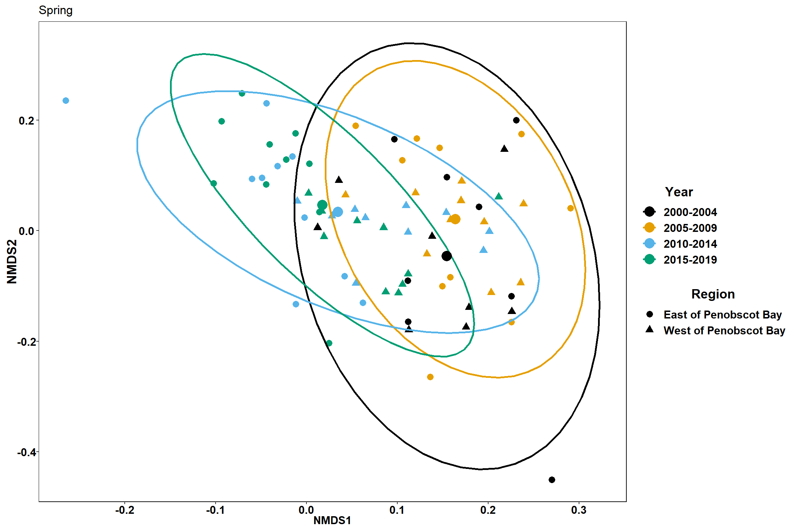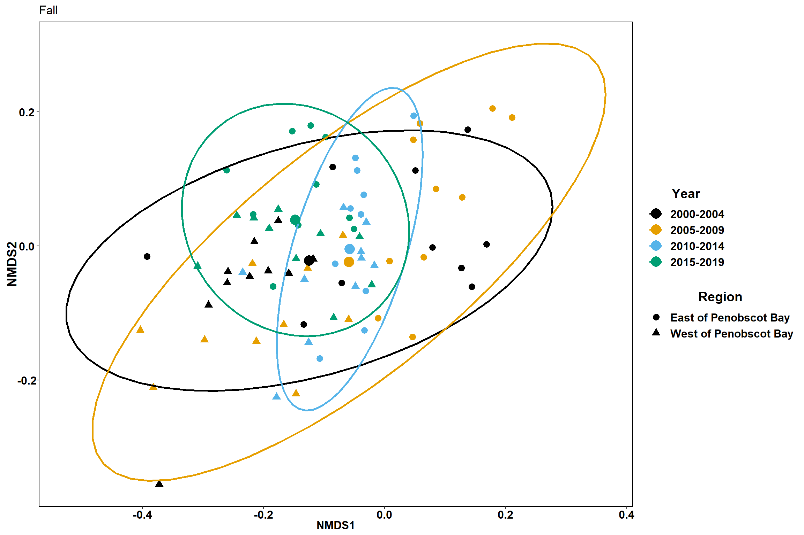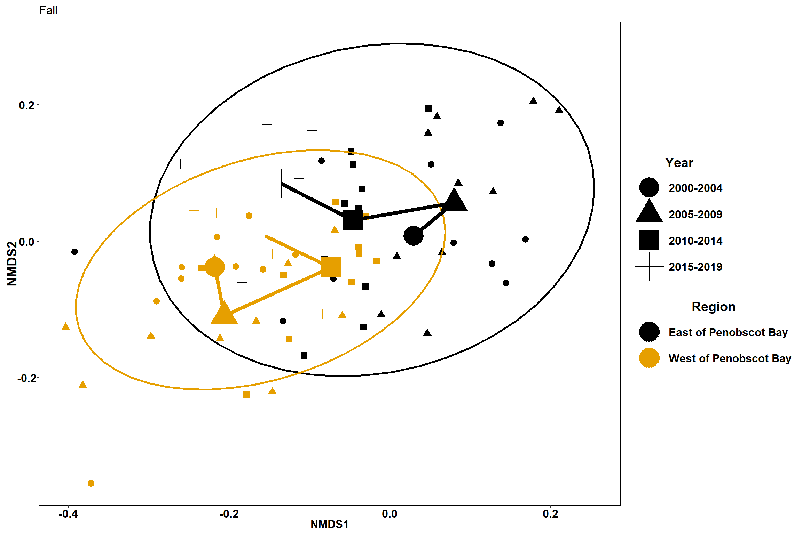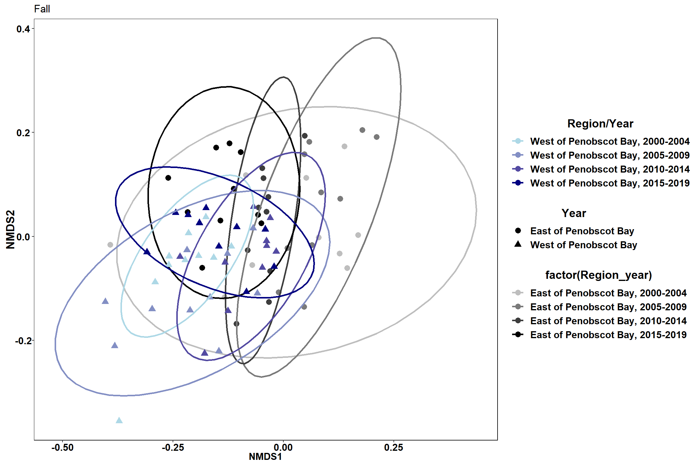
Time
## Joining, by = "indicator"
## Joining, by = "indicator"
## Joining, by = "indicator"
## Joining, by = "indicator"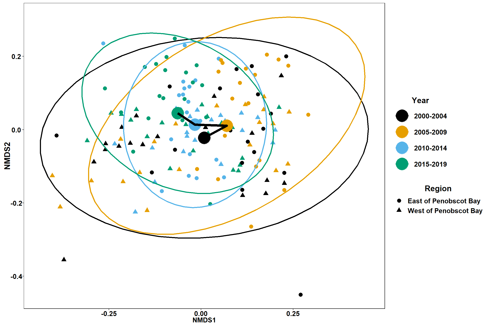 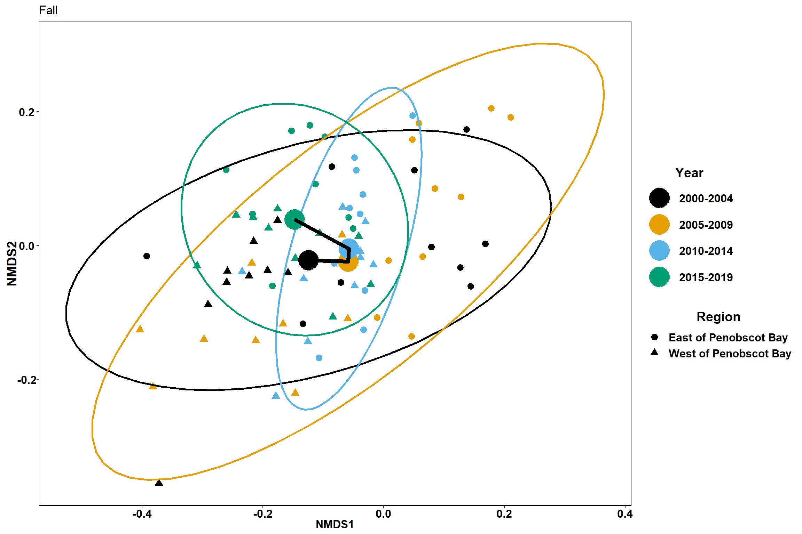
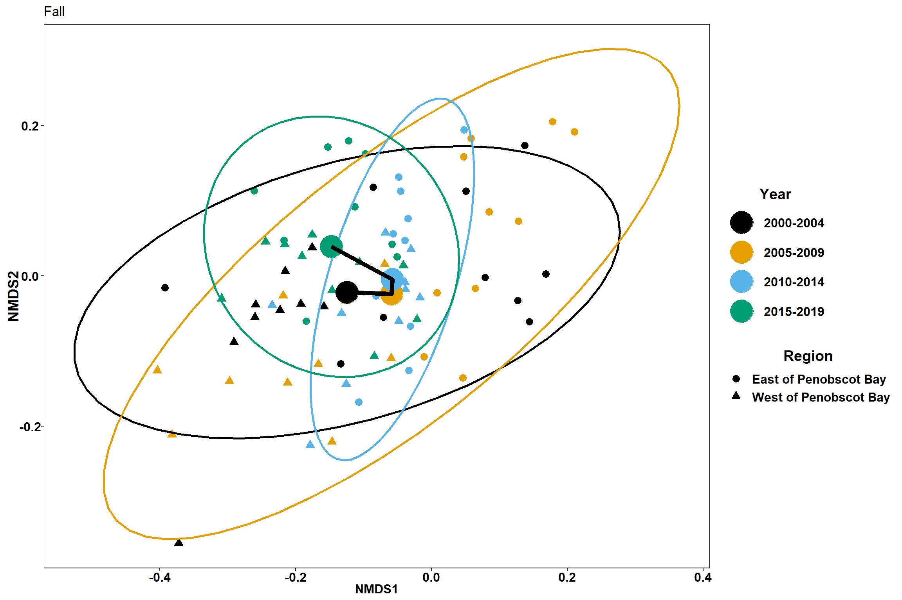
Season
## Joining, by = "indicator"
## Joining, by = "indicator"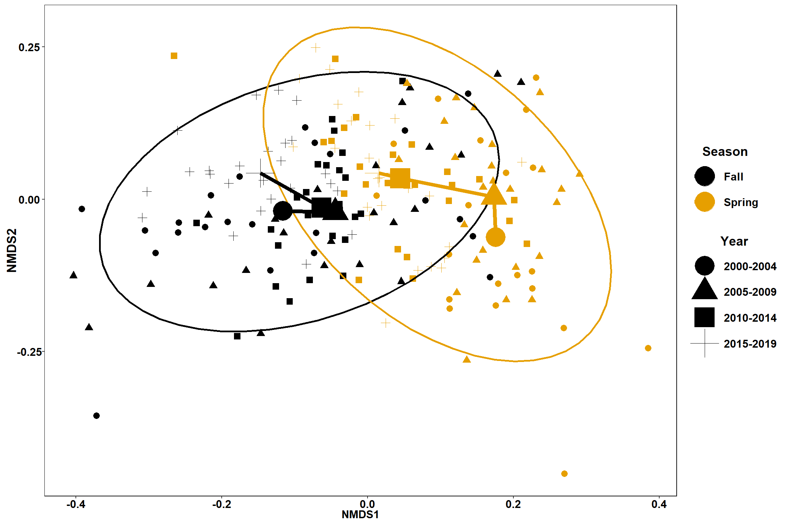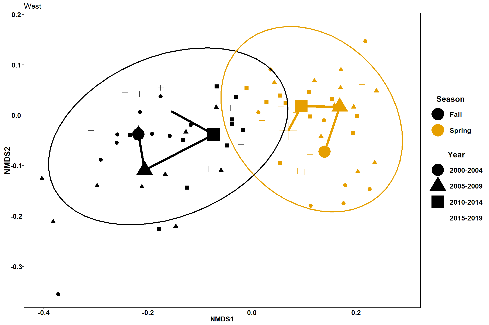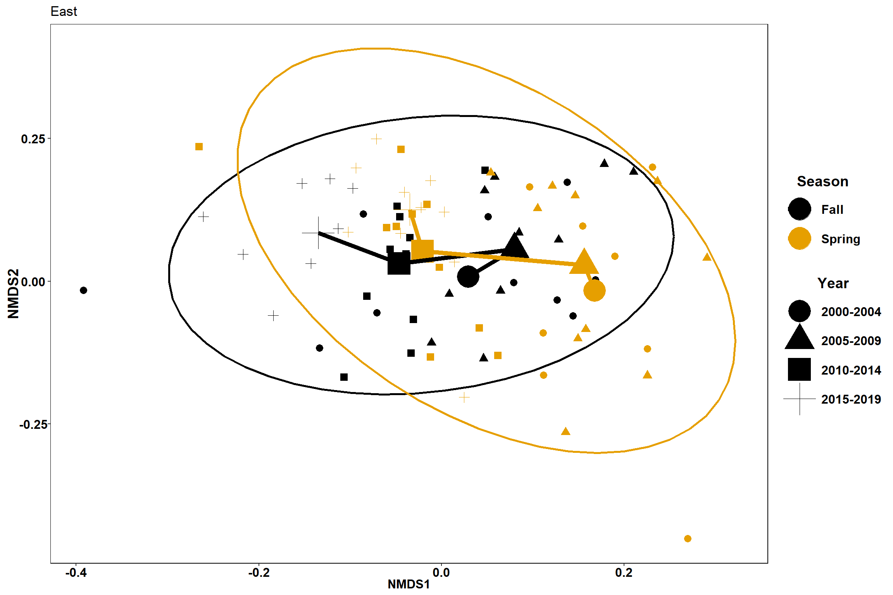
Add environmental factors
latitude, longitude, salinity, temperature, depth
trawl_data<-read.csv(here("Data/MaineDMR_Trawl_Survey_Tow_Data_2021-05-14.csv"))
all_Data<-group_by(trawl_data, Season, Year, Region)%>%
filter(Year<2020)%>%
summarise(start_lat=mean(Start_Latitude),start_long=mean(Start_Longitude),end_lat=mean(End_Latitude), end_long=mean(End_Longitude),start_depth=mean(Start_Depth_fathoms, na.rm=TRUE), end_depth=mean(End_Depth_fathoms, na.rm=TRUE), bottom_temp=mean(Bottom_WaterTemp_DegC, na.rm=TRUE), bottom_sal=mean(Bottom_Salinity, na.rm=TRUE),surface_temp=mean(Surface_WaterTemp_DegC, na.rm=TRUE), surface_sal=mean(Surface_Salinity, na.rm=TRUE))%>%
full_join(trawl_data_arrange)%>%
ungroup()## `summarise()` has grouped output by 'Season', 'Year'. You can override using the `.groups` argument.## Joining, by = c("Season", "Year", "Region")com<-select(all_Data, benthivore, benthos,piscivore,planktivore, undefined)
com<-vegdist(com, method="bray")
#convert com to a matrix
m_com = as.matrix(com)
set.seed(123)
nmds = metaMDS(m_com,k=2, distance = "bray", trymax = 200)## Run 0 stress 0.1741426
## Run 1 stress 0.1741425
## ... New best solution
## ... Procrustes: rmse 8.547141e-05 max resid 0.001121714
## ... Similar to previous best
## Run 2 stress 0.1741403
## ... New best solution
## ... Procrustes: rmse 0.0006325414 max resid 0.008146205
## ... Similar to previous best
## Run 3 stress 0.1741405
## ... Procrustes: rmse 7.796045e-05 max resid 0.0009075655
## ... Similar to previous best
## Run 4 stress 0.174143
## ... Procrustes: rmse 0.000617407 max resid 0.007835139
## ... Similar to previous best
## Run 5 stress 0.1756323
## Run 6 stress 0.1741425
## ... Procrustes: rmse 0.0006070086 max resid 0.007888487
## ... Similar to previous best
## Run 7 stress 0.1741427
## ... Procrustes: rmse 0.0006227408 max resid 0.007964962
## ... Similar to previous best
## Run 8 stress 0.1773435
## Run 9 stress 0.1774551
## Run 10 stress 0.1868927
## Run 11 stress 0.1833826
## Run 12 stress 0.1756293
## Run 13 stress 0.1792026
## Run 14 stress 0.1873262
## Run 15 stress 0.1792051
## Run 16 stress 0.1873265
## Run 17 stress 0.1741427
## ... Procrustes: rmse 0.0006111671 max resid 0.007892951
## ... Similar to previous best
## Run 18 stress 0.175632
## Run 19 stress 0.1792018
## Run 20 stress 0.1741426
## ... Procrustes: rmse 0.0006109017 max resid 0.007909025
## ... Similar to previous best
## *** Solution reachednmds##
## Call:
## metaMDS(comm = m_com, distance = "bray", k = 2, trymax = 200)
##
## global Multidimensional Scaling using monoMDS
##
## Data: m_com
## Distance: user supplied
##
## Dimensions: 2
## Stress: 0.1741403
## Stress type 1, weak ties
## Two convergent solutions found after 20 tries
## Scaling: centring, PC rotation
## Species: scores missingenv<-select(all_Data, start_lat, start_long, end_lat, end_long,start_depth, end_depth, bottom_temp, bottom_sal, surface_temp, surface_sal)
en<-envfit(nmds, env, permutations=999, na.rm=TRUE)
en##
## ***VECTORS
##
## NMDS1 NMDS2 r2 Pr(>r)
## start_lat 0.38259 -0.92392 0.1461 0.001 ***
## start_long 0.29706 -0.95486 0.1659 0.001 ***
## end_lat 0.37975 -0.92509 0.1454 0.001 ***
## end_long 0.29696 -0.95489 0.1659 0.001 ***
## start_depth -0.84780 -0.53031 0.0347 0.028 *
## end_depth -0.74052 -0.67203 0.0300 0.058 .
## bottom_temp -0.98891 -0.14850 0.3638 0.001 ***
## bottom_sal -0.99645 -0.08424 0.1995 0.001 ***
## surface_temp -0.96907 0.24679 0.4962 0.001 ***
## surface_sal 0.61131 0.79139 0.0008 0.927
## ---
## Signif. codes: 0 '***' 0.001 '**' 0.01 '*' 0.05 '.' 0.1 ' ' 1
## Permutation: free
## Number of permutations: 999
##
## 5 observations deleted due to missingnessplot(nmds)## species scores not availableplot(en)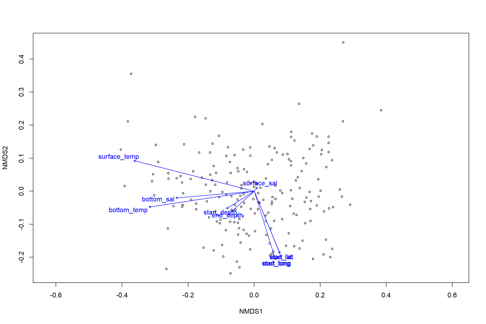
en_coord_cont = as.data.frame(scores(en, "vectors")) * ordiArrowMul(en)
en_coord_cat = as.data.frame(scores(en, "factors")) * ordiArrowMul(en)
#extract NMDS scores for ggplot
data.scores = as.data.frame(scores(nmds))
#add columns to data frame
data.scores$Region = all_Data$Region
data.scores$Year = all_Data$Year
data.scores$Season= all_Data$Season
data.scores$Year_groups= all_Data$YEAR_GROUPS
data.scores$Year_decades= all_Data$YEAR_DECADES
data.scores$Region_new=all_Data$REGION_NEW
data.scores$Region_year=all_Data$REGION_YEAR
data.scores$Season_year=all_Data$SEASON_YEARp_region<- ggplot()+
geom_point(data = data.scores, aes(x = NMDS1, y = NMDS2, color=Region_new), size = 4) +
scale_color_colorblind()+
geom_segment(data=en_coord_cont, aes(x = 0, y = 0, xend = NMDS1, yend = NMDS2), size =1.5, alpha = 0.5)+
geom_text(data = en_coord_cont, aes(x = NMDS1, y = NMDS2), size=5,
fontface = "bold", label = row.names(en_coord_cont))+
theme(axis.title = element_text(size = 16, face = "bold"),
panel.background = element_blank(), panel.border = element_rect(fill = NA),
axis.ticks = element_blank(), axis.text = element_blank(), legend.key = element_blank(),
legend.title = element_text(size = 16, face = "bold"),
legend.text = element_text(size = 16))
p_year<- ggplot()+
geom_point(data = data.scores, aes(x = NMDS1, y = NMDS2, color=Year_groups), size = 4) +
scale_color_colorblind()+
geom_segment(data=en_coord_cont, aes(x = 0, y = 0, xend = NMDS1, yend = NMDS2), size =1.5, alpha = 0.5)+
geom_text(data = en_coord_cont, aes(x = NMDS1, y = NMDS2), size=5,
fontface = "bold", label = row.names(en_coord_cont))+
theme(axis.title = element_text(size = 16, face = "bold"),
panel.background = element_blank(), panel.border = element_rect(fill = NA),
axis.ticks = element_blank(), axis.text = element_blank(), legend.key = element_blank(),
legend.title = element_text(size = 16, face = "bold"),
legend.text = element_text(size = 16))
p_region
p_year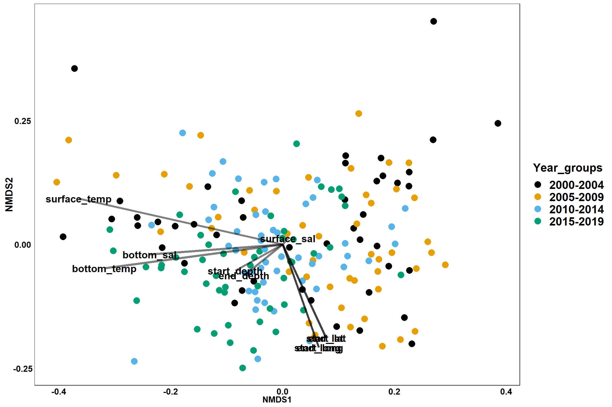
ordisurf(nmds, env$bottom_temp)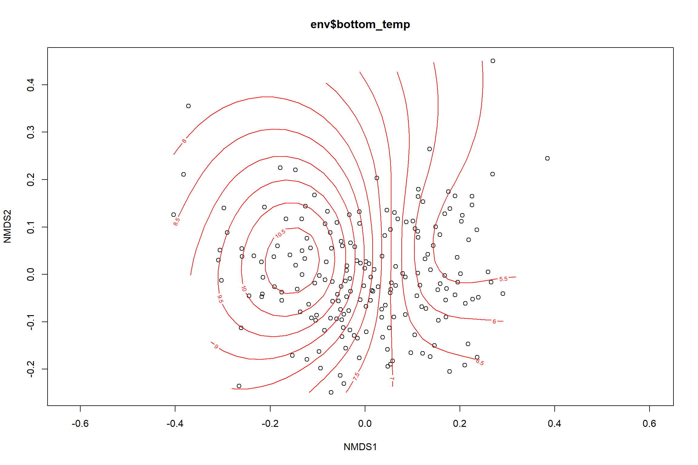
##
## Family: gaussian
## Link function: identity
##
## Formula:
## y ~ s(x1, x2, k = 10, bs = "tp", fx = FALSE)
##
## Estimated degrees of freedom:
## 6.6 total = 7.6
##
## REML score: 397.4